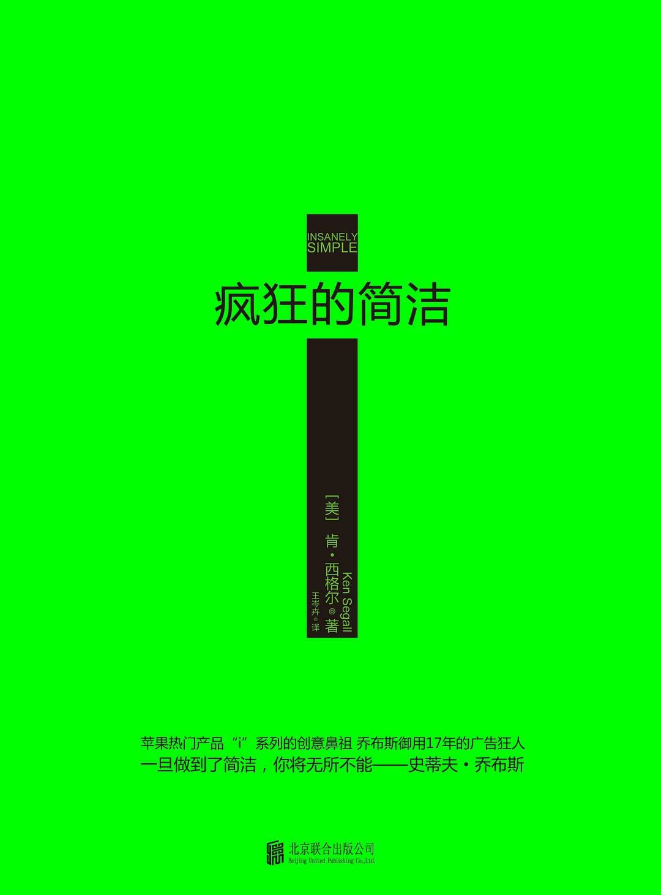

注：【】部分为笔者心得，非原文摘抄。
- 一切始于简洁。
- 多试总比不试好，简洁往往能带来更好的结果。
- 简洁不会自动诞生，它需要伯乐——一个坚持原则的人，一个能抵御复杂的人，一个头脑聪慧且真心实意的人。
- 人们更喜欢简洁。
- 正因为人们渴望将事情透明化，所以他们才会对简洁做出积极的回应。
- 把握并充分利用简洁的商人，注定会比拒绝简洁的商人获得更大的成功。
- 营销就像设备对于企业一样重要。
- 利用简洁的力量，让自己的事业在复杂的世界里独领风骚。
- 【人的适应能力和不愿改变的天性是复杂赖以生存的法宝，但这不能削弱简洁的魅力。】
- 如果你理解不到位或技术有缺陷，你就无法与诡计多端的复杂相抗衡。
- 【人到了关键时刻，只能靠自己！】
- 直率就是简洁，迂回就是复杂。
- 大多数人从来没有意识到自己的组织缺乏透明度，但组织十有八九都是这样的。
- 沟通时必须直截了当。
- 做生意可没有用来浪费的时间。
- 还不错是不够的（Good enough is not enough）。
- “退而求其次”会使事业陷入险境，因为你将不得不去捍卫一个自己根本不赞成的创意。
- 如果你提交和批准的工作都是自己百分百确信的，你就能获得一件任何人都抢不走的宝物——诚信。
- 妥协往往会把你打回原形，让客户质疑你的才华。
- 【不要留恋沉没成本。】
- 在迫切需要帮助的公司里工作，与在只需维护业务的公司里工作，是大不相同的。
- 【创业公司应慎挖大公司“人才”，拒绝官僚机构出身的人。】
- 【坦诚有助于为自己精确定位。】
- 如果你的能力仅仅如此，那么你就该把工作拱手让人。
- 尽可能坦然地把闲言碎语归类，从中吸收对自己有用的东西，把其余的垃圾消息抛诸脑后。
- 打开思路，剩下的一切都无关紧要。
- 【原则面前绝不妥协！】
- 简洁的首要原则：始于精英小团队并维持小规模。
- 参会者需要有参会的理由，没有所谓的面子邀请。会议要么非常需要你，要么根本不需要你。会议无关私人关系，纯粹是公事公办。
- 小团队比大团队更专注、更有动力，越聪明的人越能更高质量地工作。
- 复杂通常会让你绕远路。
- 简洁从不允许出现特例。
- 只有当你清楚了解了项目的本质，清楚界定了什么是人员过剩，什么是人员紧缺，才能充分理解“小规模”的含义。
- 项目团队的规模始终很小，真正有才华的人能承担责任，这就是驱使他们疯狂工作、提出奇思妙想的动力。
- 质量比数量重要。
- 崇尚简洁，但不要因此而磨灭员工的个性。
- 太多不必要的会议或人员过剩的会议会消磨掉天才的创意。
- 规模较小的团队能更快地取得成功，只要团队里都是精英就行。
- 如果你认为在一个项目上安排更多的人手能提高效率，那就说明你从一开始就对这个团队没有足够的信心。
- 为了让工作走上正轨，有时候我们需要变得粗鲁。
- 适时展露自己残酷、诚实的一面，坚持把精英团队维持在小规模，恰巧是赢得人们尊重的最佳方式。
- 工作质量与参与人数成反比。
- 工作质量的提高与最终决策者的参与程度成正比。
- 不能把重大的营销决策委托给别人。
- 如果你觉得某个东西很重要，你自然会于时间去关注。
- 搞砸一个项目最简单的办法就是给人充足的时间。
- 为了实现伟大的目标，我们必须做两件事：制定计划，然后给自己相对紧迫的时间。
- 只有带领团队勇往直前，你才能实现目标。
- 品牌是一家公司最有价值的资产。
- 简洁是实现崇高目标的基本要求。
- 伟大的创意不能复杂，必须直截了当、一阵见血。
- 如果你认为伟大公司的基石是一系列价值观，那么，最好选一个贯穿公司不同发展阶段的价值观，把它作为宣传的主题。
- 标志性图片可以是最强大的宣传手段。
- 【在借鉴的同时保持自己的个性，才不会被认为是抄袭。】
- 所谓的“狂人”，就是那些敢于从不同角度看实物的人。
- 富有激情的人能让世界变得更美好，能付诸实践的人才是能改变世界的人。
- 坚信自己的信念，这正是“做好广告”的精髓。
- 如果你能很好地理解并运用产品命名的原则，无论你身处什么样的组织，你都能获益良多。
- 产品命名是“简洁”的最终操练。
- 一旦客户爱上了你无法接受的东西，真正能打动他们的办法就是拿出更棒的创意来。
- 只要有值得与人分享的新创意，就不要怕新瓶装旧酒。
- 人类生来就习惯用一个词来描述一件产品。
- 人们大多青睐简单的名字。
- 不可贪婪他人的营销计划。
- 唯一比设计简洁的网站更重要的事情是：让人们更方便地进入网页。
- 为用户服务，而不是让用户为自己服务。
- 细节无不重要。
- 策划人员的职责是整合所有信息，使公众容易消化，同时引导创意人员高效工作。
- 【聪明的人不怕忙，只是怕像傻子一样瞎忙。】
- “简洁”喜欢速战速决。
- 演说词越少，才越接近现实。
- 展示议程和每个主题，进入下一个主题前先总结上一个主题，最后总结整个陈述的亮点。
- 简洁最伟大之处就是能直接触碰人性。
- 任何一家公司，只要能驾驭简洁，很快就能“主宰世界”。
- 【伟大的科技产品帮助用户发掘和释放自身潜力。】
- 【既然有笔记本和 WIFI，为什么还需要固定的座位？】
- 我们都需要好好想想，在有生之年自己做出了什么贡献。
- 如果一个人无法欣赏人的价值，无法理解人类行为的驱动力，他就不可能对“简洁”有深刻的理解。
- 企业推行“简洁”面临的挑战，就是必须保持创业时期的价值观。
- 【人性化是简洁设计的指导标准。】
- 真人形象只是表现“人性化”的手段之一。
- 简洁就是人们认识你、了解你，并最终信任你的原因。
- 【一个传奇的逝去，不代表庸者就顺理成章地成为“最好”，平庸的始终是平庸的。】
- 简洁需要清晰的宣传战略加上前后一致的信息。
- 简洁是显而易见的。
- 伟大的创意通常不会以传统方式显现出来。
- 【很多人哭着喊着把乔布斯捧成神，但他们完全不懂，乔布斯只是很真诚地表达自己对产品的看法和期望，而这些人却只是粗浅地抄了点儿简洁风格就在产品里自以为精明地挖一些算计用户的坑，去死吧！】
- 要让简洁占据上风，就必须有人愿意为它承担风险。
- 【愿意承担责任的人才能委以重任。】
- 【没有“不可能”，一切都只是概率问题。】
- 【即使是最“可靠”的合作伙伴，也要让他知道自己有被竞争对手取代的危险。】
- 对广告公司说的“可能”和“不可能”，必须三思而后行。
- 不要让别人的意见淹没你内心的想法。最重要的是，要鼓起勇气听从心底的直觉。
- 如果人们有了好主意，那就应该摒弃所有的消极情绪，集中精力向前进。
- “简洁”只允许人们专注于一件事，只专注于一件事也有助于实现“简洁”。
- 集中精力制造伟大的产品，而不是担心来自四面八方的威胁。
- 【失败了，就意味着尝试过；尝试过，就证明有勇气；有勇气，还怕什么失败呢！】
- 把创新看成是一场战争。
- 在适当的时候，采取适当的策略。
- 简洁很脆弱，它需要一位能人，确保一切顺利推进。
- 用好战的态度来对待“简洁”，这将帮助你越过“复杂”设下的重重障碍。
- 简洁才是当今世界最重要的战斗武器。
- 当你第一次尝试解决一个问题时，第一个解决方案通常比较复杂，而大多数人都停留在了那里。但如果你坚持探索，拨开层层表象，探索问题的本质，你就能得到更精炼、更简洁的解决方案。
- 只有当你接近创意的本质时，你才能发现真正值得自豪的东西。
- “简洁”不一定等同于“更好”，创意的质量才是最关键的。
- 有时候，你在创新的同时犯下了错误，你最好尽快承认，然后继续创造其它东西。
- “品牌银行”收支平衡，才是让企业脱颖而出的关键。
- 实现简洁的要素：
- 直接而坦诚；
- 小即是好；
- 少即是好；
- 牢记目标；
- 寻找标志；
- 推敲命名；
- 拒绝正式；
- 思考人性；
- 时刻质疑；
- 保持斗志。
- 简洁可能比复杂更难做到，你必须努力理清思路，才能让事物变得简洁。但这么做总归是有价值的，一旦做到了简洁，你将无所不能。——史蒂夫·乔布斯
Here’s to the crazy ones 这就是狂人
The misfits 他们不善与人共事
The rebels 他们叛逆
The troublemakers 会制造麻烦
The round pegs in the square holes 与周围的环境格格不入
The ones who see things differently 从不随波逐流
They’re not fond of rules 他们不喜欢规则
And they have no respect for the status quo 也不安于现状
You can quote them, disagree with them, glorify or vilify them 你可以引述他们的说法、可以不同意他们的观点、可以随意美化或诋毁他们
About the only thing you can’t do is ignore them 但唯独不能忽略他们
Because they change things 因为他们能改变事物
They push the human race forward 他们推动人类向前发展
And while some may see them as the crazy ones 当人们视其为疯子
we see genius 我们看到的却是天才
Because the people who are crazy enough to think they can change the world 因为那些疯狂地认为自己能改变世界的人
are the ones who do 正在改变世界